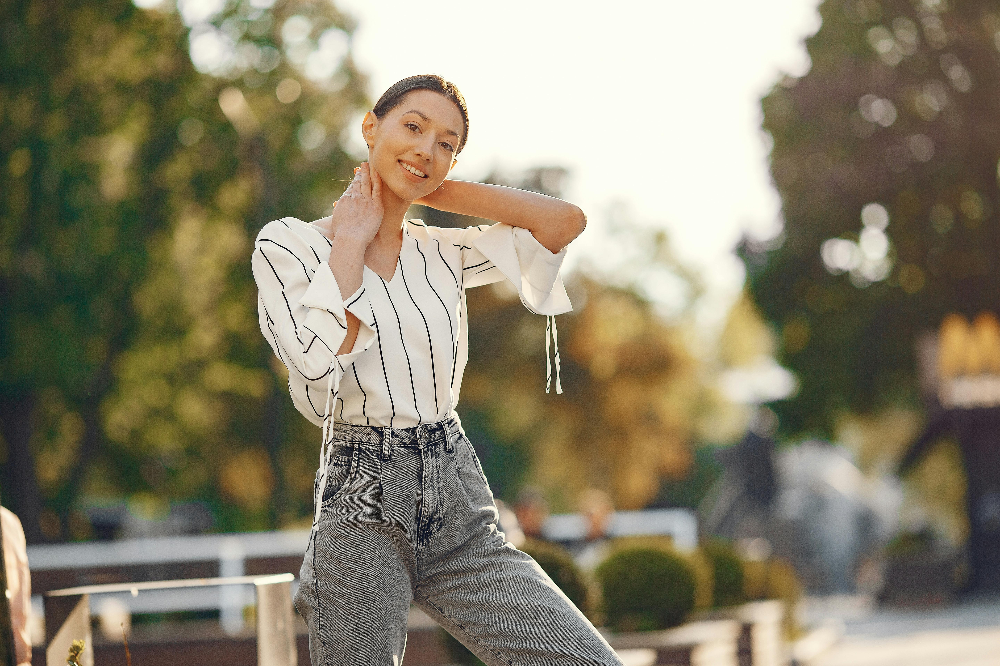

About Pawsitive Rescue
Pawsitive Rescue began in 2016 with a small group of animal lovers who shared one goal: giving abandoned and neglected animals a second chance. What started as a foster-based rescue effort quickly grew into a nonprofit organization dedicated to saving lives and building stronger connections between animals and the community. Over the years, Pawsitive Rescue has helped more than 1,000 animals find loving forever homes through compassion, teamwork, and a belief that every paw deserves a place to belong.
Our organization is committed to rescuing, rehabilitating, and rehoming animals in need while also promoting responsible pet ownership. We work hard to provide medical care, safe foster environments, training, and socialization so that every animal has the best possible chance to thrive. What makes Pawsitive Rescue special is the heart behind everything we do—our volunteers, supporters, and adopters all play an important role in creating happy endings and hopeful new beginnings.
Meet Our Team

Emma Rodriguez – Volunteer Coordinator
Emma helps organize and support the volunteers who keep Pawsitive Rescue running
each day. She works closely with new helpers, schedules volunteer activities, and
makes sure everyone feels prepared to make a difference for the animals in our care.
Marcus Lee – Animal Care Specialist
Marcus focuses on the daily care and well-being of rescued animals. From feeding
and enrichment to helping animals feel safe and comfortable, he plays a big role
in making sure each pet receives the attention and compassion they need while
waiting for a forever home.

Sofia Nguyen – Events & Outreach Lead
Sofia helps connect Pawsitive Rescue with the community through outreach programs,
special events, and fundraising efforts. She loves creating fun opportunities for
people to meet adoptable pets, learn about the rescue, and support the mission in
meaningful ways.